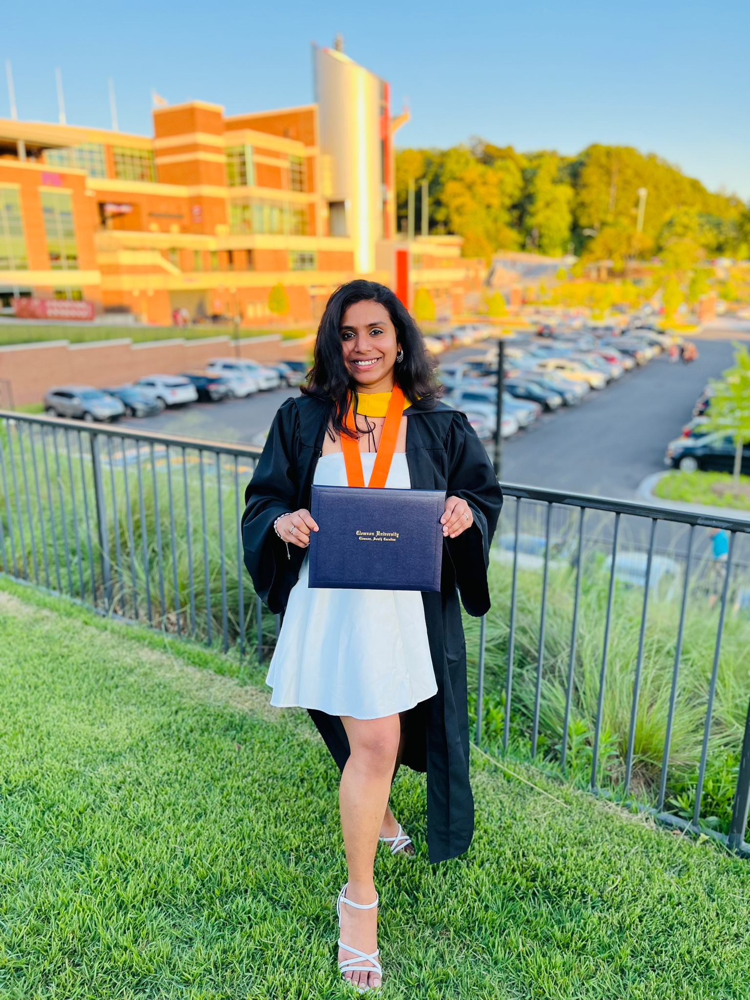
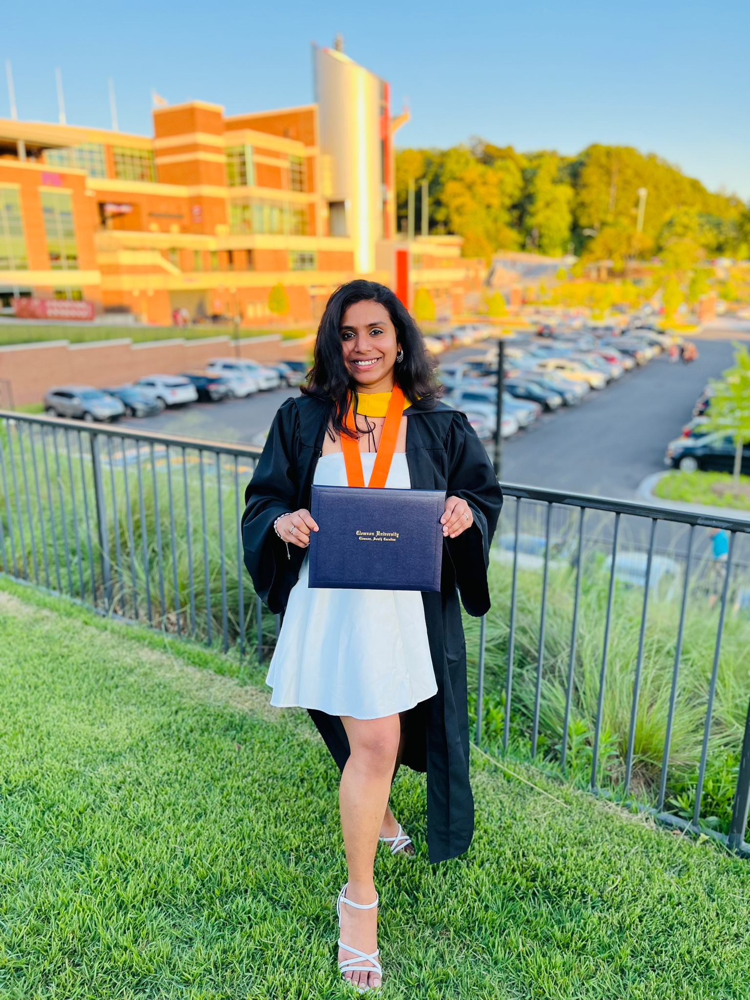
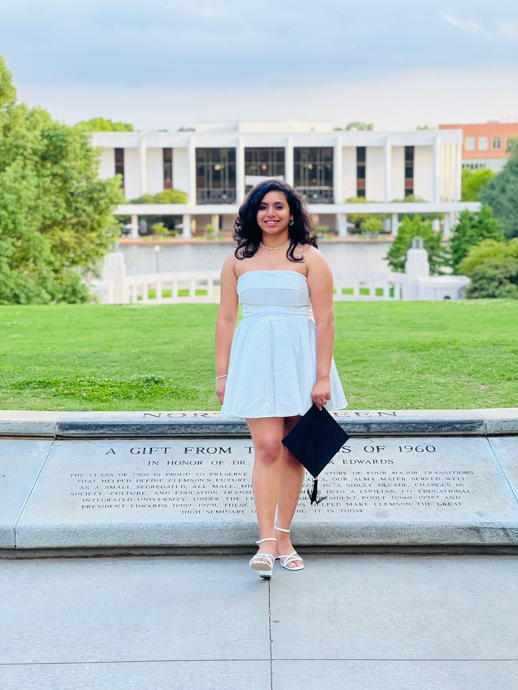
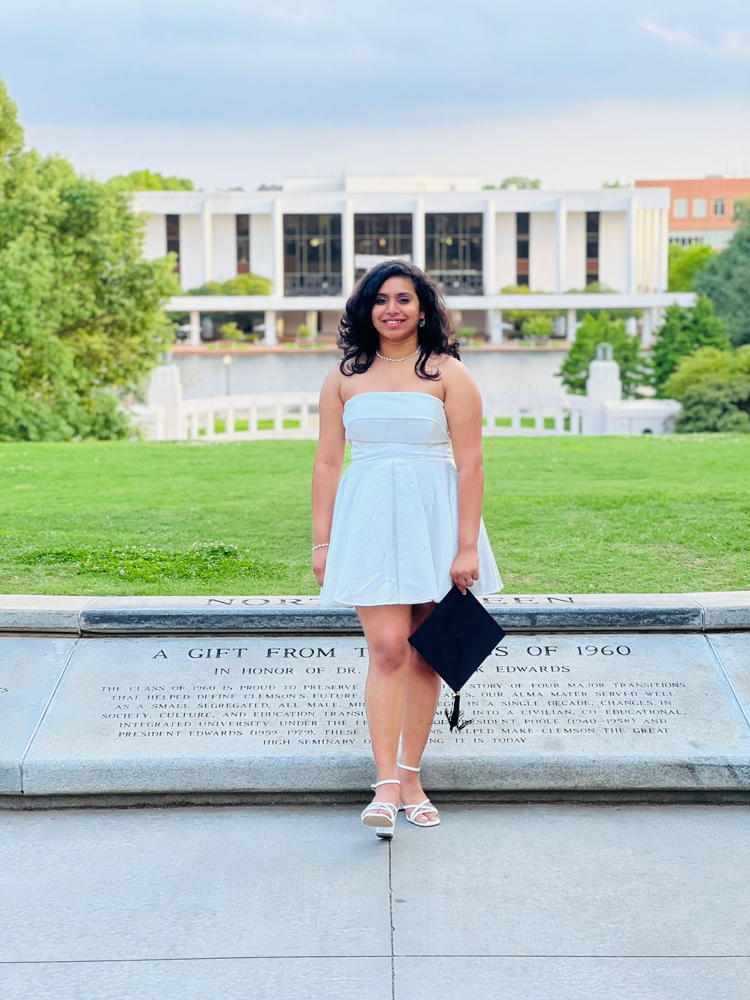

About Me
Hello! I’m Sravani Pati, a passionate data enthusiast with a creative edge and a relentless drive to excel in AI and data science. My journey is fueled by a love for technology and a dedication to harnessing data to create meaningful, impactful solutions. With a strong foundation in machine learning, statistical analysis, and data engineering, I am committed to leveraging my skills to solve real-world challenges. Known for my analytical rigor and ability to innovate, I am eager to bring my expertise to an organization where I can contribute significantly while continuing to grow as a data science professional.
Bachelors Journey (2017 - 2021)
Inspired by my early fascination with technology, I pursued a Bachelor’s degree in Computer Science from Sampoorna Institute of Technology and Research, Visvesvaraya Technological University. Throughout my studies, I consistently achieved a GPA above 8.5 each semester, culminating in an impressive overall GPA of 8.9/10. This accomplishment stands as a testament to my dedication and perseverance, earning me recognition among faculty and peers alike. By my final semesters, I ranked among the top 10 in the university, a proud moment that brought honor to my professors and family.

Honored by Sampoorna Group of Institutions for securing the 6th University Rank in B.E (CSE), VTU.
Visit : Sampoorna Institute of Technology and Research (VTU)Key Projects and Experiences
Machine learning specialist (2019)
Internship at Aptech | Duration: 3 months
Driven by a passion for applying data science to real-world challenges, I gained practical experience during an internship with Aptech, where I developed a machine learning model for a University Admission Prediction System. This project encompassed end-to-end data processing, model training, and evaluation. After testing multiple algorithms, I identified the Multi-layer Perceptron as the most effective model and deployed it on a website, enabling students to input their profiles and receive tailored college recommendations based on their likelihood of admission. This experience not only deepened my technical skills in machine learning and deployment but also showed me firsthand how AI can drive personalized, impactful solutions.
- Improved prediction accuracy by 35% with model optimization.
- Utilized AWS EC2 for model deployment and AWS S3 for data storage.
- Integrated AWS Lambda to reduce processing time and costs, improving efficiency by 20%.
- Streamlined API handling through integration with Amazon API Gateway, reducing shortlisting time by 70%.
Machine learning and Python (2020 - 2021)
Final Year Project | Duration: 2020 - 2021
Object Detection in Real-Time with Voice Output
In my final year, I developed a real-time object detection system using YOLO and pyttsx3 for voice output. This system assists visually impaired individuals by identifying and naming objects in their path, providing them with vital spatial awareness. It detects multiple objects in various environments and delivers audio messages to notify the user of any detected objects.
- Adversarial Attacks: Explored techniques such as hiding attacks and misclassification attacks to test the robustness of the object detection system.
- Voice Output: Integrated text-to-speech functionality using pyttsx3, enabling detected objects to be announced audibly.
- YOLO Algorithm: Implemented the YOLO (You Only Look Once) object detection model, which offers high-speed processing with reliable accuracy.
- Real-Time Detection: Achieved a detection accuracy of over 95% with real-time processing, providing quick responses for user safety.
This project not only strengthened my technical knowledge but also inspired me deeply. The experience of creating a solution with real-world impact motivated me to pursue a master’s degree, with a vision to advance my career in data science and AI.
View More DetailsData Scientist (2021-2022)
Nice Hi-Tech Centre | Duration: 1 year
After completing my bachelor’s degree, I initially planned to pursue a master’s program, but due to COVID-19, I decided to gain hands-on experience and joined Nice Hi-Tech Centre as a Data Scientist. In this dynamic startup environment, I tackled the Enron Fraud Detection Project, where I built robust data pipelines, performed feature engineering, and implemented machine learning models for fraud detection. Testing multiple algorithms, the AdaBoost model emerged as the most effective, achieving an accuracy of 81.29% and showcasing my commitment to precision and reliability in threat detection.
- Deployed fraud detection models on Microsoft Azure using Pyspark and SQL for data management.
- Reduced inconsistencies by 95% through effective feature engineering.
- Enhanced model performance by 20% with hyperparameter tuning using GridSearchCV.
- Streamlined workflows with CI/CD pipelines, lowering hosting costs by 60%.
Masters Journey (2022 - 2024)
In August 2022, my dream came true as I joined Clemson University, one of the top 100 universities in the USA. The decision to choose Clemson was driven by its cutting-edge resources, including world-class supercomputing facilities and an inspiring research environment. Clemson’s commitment to innovation, hands-on labs, and real-world applications offered the ideal setting for me to advance in data science.

 

.jpeg) 


During my time here, I have immersed myself in various real-time projects and gained hands-on experience with trending technologies across multiple domains. I completed my Master’s in Data Science with a commendable GPA of 3.8, which stands as a testament to my hard work and dedication. Through Clemson, I acquired a wealth of skills, ranging from advanced data analytics to machine learning and AI, equipping me to tackle complex challenges in the field – just as I had dreamed.
Visit : Clemson UniversityCertifications and Lifelong Learning
- AWS Certified Solutions Architect – Associate – Enhancing my understanding of scalable cloud infrastructures.
- IBM Data Engineering – Building foundational skills in data pipeline management and big data handling.
- Google Advanced Data Analytics – Mastering advanced analytics techniques to draw insights from complex data.
- Microsoft Power BI Analytics – Proficient in creating dynamic dashboards for effective data communication.
- Engineering Responsible Conduct of Research and Group 1 Investigators Conducting Social and Behavioral Science Research (SBR) – Ensuring adherence to ethical standards in data handling.
Personal Passions
Outside of work, I am passionate about dance. I constantly strive to learn new dance styles, and I've performed in various events during school and college. Another special part of my life is my pet, Leo, who remains one of my favorite companions. Above all, my parents are my pillars. My father, despite his physical challenges, has always been my strongest supporter, inspiring me to pursue my dreams without limitations.
Looking Ahead: The Future in AI
As a continuous learner with a commitment to mastering the evolving field of AI, I am particularly drawn to exploring AI-powered personalization, real-time insights, and multimodal data integration. I am currently preparing for further certifications in advanced AI and machine learning fields to solidify my knowledge and stay updated with cutting-edge technologies.